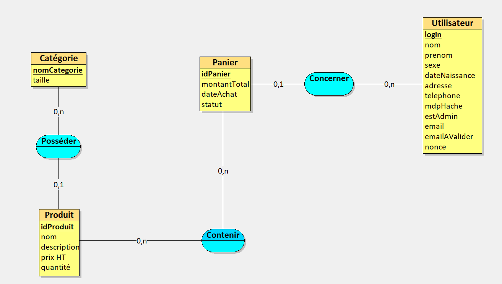
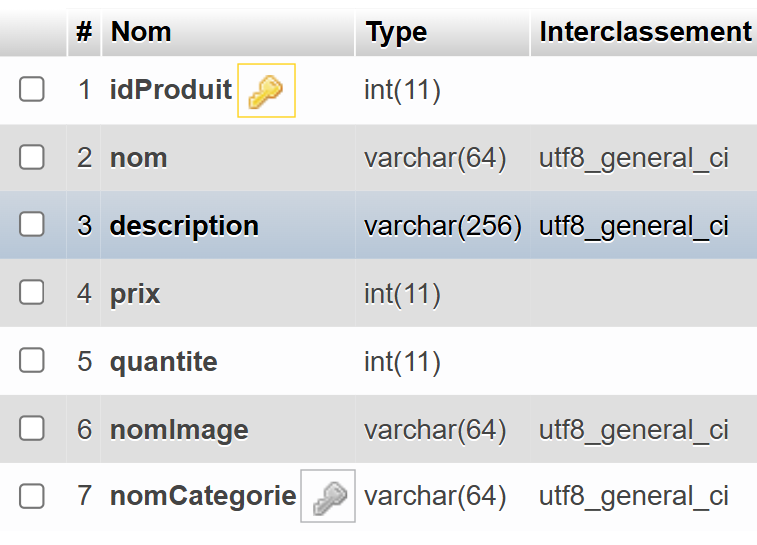
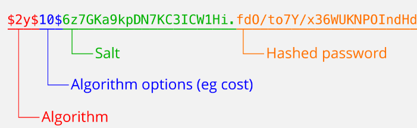

La première étape de ce projet a été de concevoir un modèle Entité-Association (EA) détaillé pour identifier les entités clés et leurs relations, ce qui nous a permis de structurer la base de données de manière logique et optimale.
Ce travail a facilité la gestion des données en assurant une certaine cohérence et l'intégrité des données, même pour des cas d’utilisation complexes.
Cette étape a été essentielle pour répondre efficacement aux besoins fonctionnels de l’application, et avoir une base stable pour commencer la réalisation du back-end.
Base de données

Après la conception du modèle EA, nous avons été menés à traduire ce modèle en une base de données opérationnelle, en utilisant phpMyAdmin pour la création des tables et des relations. Cet outil nous a permis d’implémenter les contraintes d’intégrité référentielle (clés primaires et étrangères), garantissant un comportement stable lors des interactions avec le backend . L’intégration de notre base de données avec le backend nous a donc permis de centraliser les données et d’assurer des bonnes performances lors des requêtes SQL.


Pour garantir la sécurité des données sensibles, notamment les mots de passe, nous avons intégré des techniques comme le salage, le poivrage et la hachage. Chaque mot de passe a été combiné à une valeur aléatoire unique avant d’être transformé par un algorithme de hachage cryptographique. Ces pratiques rendent les mots de passe impossibles à inverser et résistent efficacement aux attaques par table de hachage ou rainbow table.
A propos du projet
Versionning : GitLab
Equipe : 3 personnes
Communication : GoogleDocs, Discord
Outils de développement : phpMyAdmin, looping
Durée du projet : du 7 octobre au 23 novembre 2024, 1,5 mois